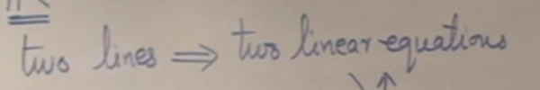

Lecture 01·02의 네 판서에서 고른 문장·라벨 26곳. 한 줄 미검출을 포함합니다. 대소문자·구두점을 유지하고 공백만 정리해 비교했습니다.
CER 19.67% · WER 41.18% · 전체 일치 19/26
| 원본 영역 | 사람 전사 | OCR |
|---|---|---|
| lecture01 · p00000 | ① Geometrical Interpretation | ① Geometrical Interpretation |
| lecture01 · p00000 | ② Algebraic Interpretation. | ②Algebraic Interpretation |
| lecture01 · p00000 | System of Linear equations. | Sys am of Linear equations. |
| lecture01 · p00000 | What is represented by this equation ? | Wh? |
| lecture01 · p00000 | 1-dim | 1-dim |
| lecture01 · p00000 | 3rd-dim | 3-din |
| lecture01 · p00000 | plane | plane |
| lecture01 · p00000 | 2-dim | 2-dim |
| lecture01 · p00003 | UNIQUE | UNIQUE |
| lecture01 · p00003 | PARALLEL lines | PARALLEL lines |
| lecture01 · p00003 | solution | solution |
| lecture01 · p00003 | no solution. | no solution. |
| lecture02-testing · p00000 | Lecture 2 (mimio) | Lecture 2 (mimio) |
| lecture02-testing · p00000 | Recall: | Recall: |
| lecture02-testing · p00000 | 1) System of linear Equations | SystemoflinearEquations |
| lecture02-testing · p00000 | 2) Number of solutions | 2) Number of solutions |
| lecture02-testing · p00000 | 3) Row picture & | 3) Row picture & |
| lecture02-testing · p00000 | Column picture | Column picture |
| lecture02-testing · p00005 | at least one solution | atleastonesolution |
| lecture02-testing · p00005 | Consistent system | Consistent system |
| lecture02-testing · p00005 | → no solution | → no solution |
| lecture02-testing · p00005 | Inconsistent system | Inconsistent system |
| lecture02-testing · p00005 | Multiplication | Multiplication |
| lecture02-testing · p00005 | by a non-zero | by a non-zero |
| lecture02-testing · p00005 | scalar | scalar |
| lecture01 · p00003  | two lines ⇒ two linear equations | (미검출) |
왼쪽 RGB / 오른쪽 적응 이진화. 이진화에서 추가되는 오류와 누락을 함께 확인할 수 있습니다.